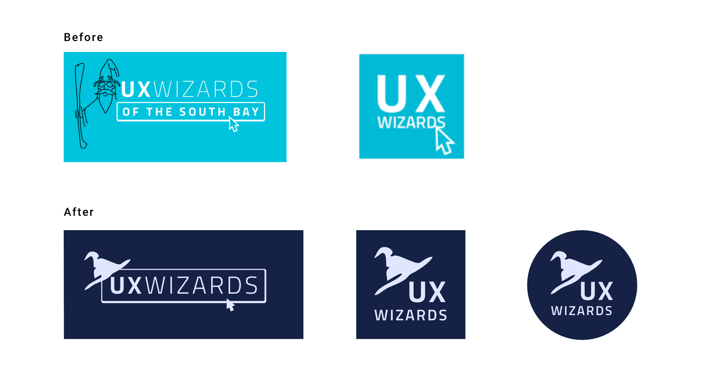
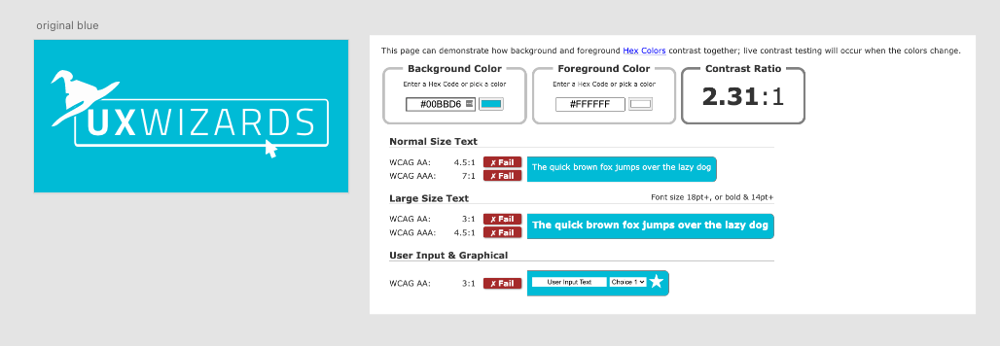

UX Wizards Logo Process
Challenge
One of the risks of renewing the brand was that people might not recognize the new identity if anydrastic changes were made.
We conducted surveys of the UX Wizards leadership and decided to update the logo rather than creating a brand new logo. We needed to consider the meaning of the updated logo during the creation process.

Goal
Simplify the current logo to align with our mission and to be used in a variety of platforms and formats.
Solution
- Use wizard hat to be main element
- Keep original logo’s font, outline frame, cursor element and color
- Use hand drawn lines to keep crafty feel
Process
Draft to V1
The design team sketched various logo ideas to pitch to the Wizard council. I took their design of choice, #7, and created a digital draft of it.
Logo designs were made in black & white color to focus on the design elements before applying colors.
V1 to V2
V1 Feedback
- Arrow should be the same position as the original
- Would like to see less pointed hat to be more approachable
- We need square logo for social media
Iterate based on feedback and created more variations of the square logos. Between V2 and V3, designs are narrowed down. V3 is focused on hat shapes.
Final updates of the black and white logo
Moving V3 to the final black and white logo, the hat’s shape is refined.
Color accessibility issues
We originally planned on keeping turquoise as the main brand color so that our members would quickly recognize the logo as the same brand. However, the white logo over the turquoise background did not pass the accessibility test.
After we tried different color combinations, we found that, from our palette, light purple over navy had the best legibility
Final Logos
We created a circular version of the logo for specific social media platforms.
Finally, we added the logo description and clearance guide to the Brand Guide.